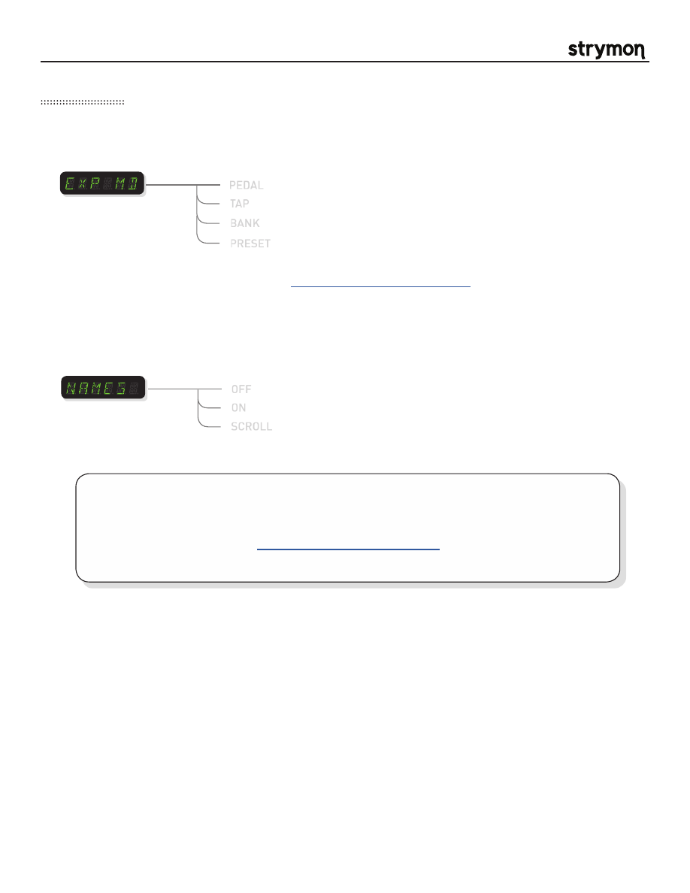

Mobius
-
User Manual
®
pg 21
Globals Menu
OFF
Patch Names:
Enables or disables the display of patch names when displaying the current
bank. If set to ON or SCROLL, when incrementing through banks with the VALUE
ENCODER, the bank number will be displayed with 2 digits followed by the first 3
characters of the patch name.
ON
SCROLL
- bank numbers are displayed instead of patch names
- the first 6 characters of the patch name are displayed
- the patch name will scroll once completely through its 16 characters
then settle on the first 6 characters
PEDAL
EXP input mode:
Configures the
EXP
input to use an
Expression Pedal
, an external
TAP
footswitch, or
a Strymon
MultiSwitch
.
TAP
BANK
PRESET
- for use with Expression Pedal
- for use with external TAP footswitch, or MultiSwitch for tap and preset select
- for use with MultiSwitch to select preset banks
- for use with MultiSwitch to select presets
Please refer to the MultiSwitch user manual for detailed MultiSwitch setup
information:
www.strymon.net/support/multiswitch
NOTE: If any of the above options do not appear in the GLOBLS menu, you may need to update
the firmware to the latest version. Visit the link below for instructions:
www.strymon.net/update